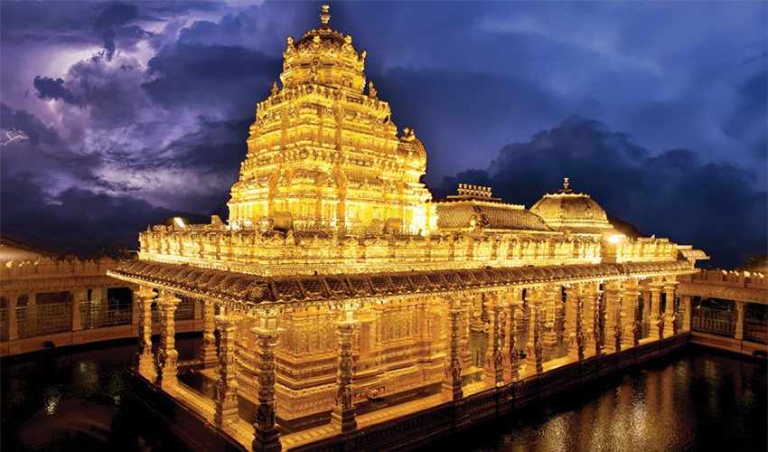
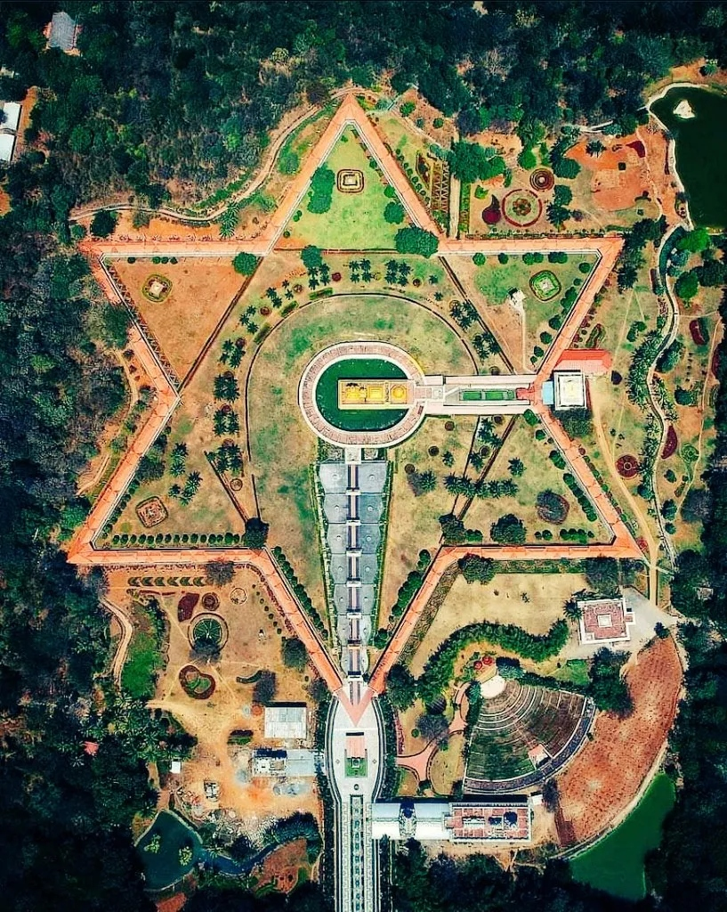
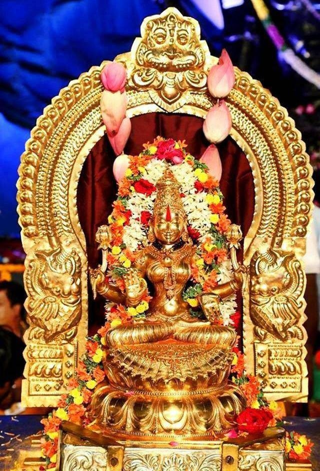
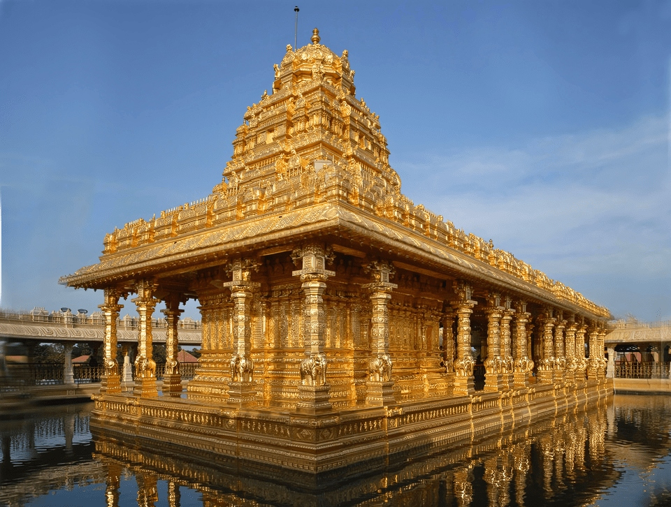
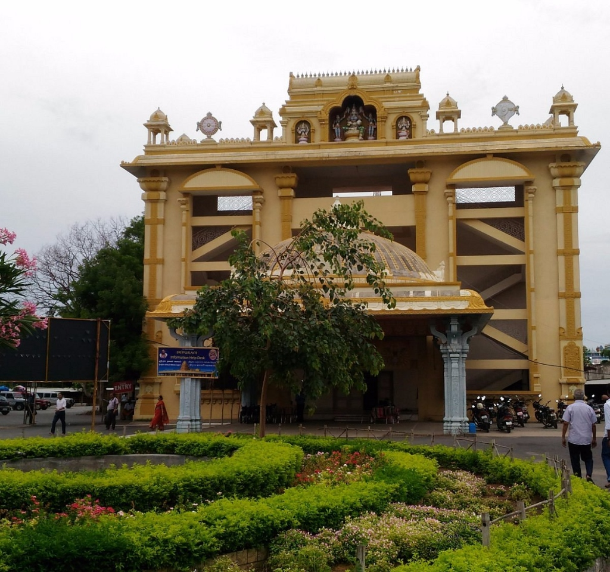

Sripuram Golden Temple
The golden temple of Sripuram is a spiritual park situated at the foot of a small range of green hills in a place known as "Malaikodi". The temple is at the southern end of the city of Vellore, at Tirumalaikodi. The salient feature of Sripuram is the Lakshmi Narayani temple or Mahalakshmi temple whose 'Vimanam' and `Ardha Mandapam' have been coated with gold both in the interior and exterior.
The temple is located on 100 acres of land and has been constructed by Vellore-based Sri Narayani Peedam, headed by spiritual leader Sri Sakthi Amma also known as Narayani Amma. The temple with gold covering, has intricate carvings and sculptures in gold. The lighting is arranged in such a way that the temple glitters even during night. The construction of the temple was completed on August 24, 2007.
Sripuram-Sri Lakshmi Narayani Golden Temple is the largest Golden temple in the world, with over 1.5 tonnes of gold used. All the gold work was done by artisans specializing in temple art using gold. Every single detail was manually created, including converting the gold chunks into gold foils and then mounting on the gold foils on copper. Gold foil from 9 layers to 15 layers has been mounted on the etched copper plates.
Every single detail in the temple art has significance from the vedas. Sripuram design represents a star-shaped path(Sri chakra), positioned in the middle of the lushgreen landscape, with a length of over 1.8 km. One has to walk along the star path to reach the temple in the middle, which is laid by messages from Sri Sakthi Amma and from different faiths and spiritual leaders.
How to Reach Sripuram
- 🚌 By Bus: Frequent local buses run from Vellore Old and New Bus Stands directly to Malaikodi/Sripuram. Direct state-run buses are also available from Chennai, Bangalore, and Tirupati.
- 🚆 By Train: The nearest major railway station is Vellore-Katpadi Junction (KPD), located approximately 12 km away. From Katpadi, you can easily hire a taxi or take a local bus.
- 🚕 By Taxi: You can book a direct cab with Vellore Travels or take a local auto-rickshaw from any point in Vellore city for a quick and comfortable ride.




